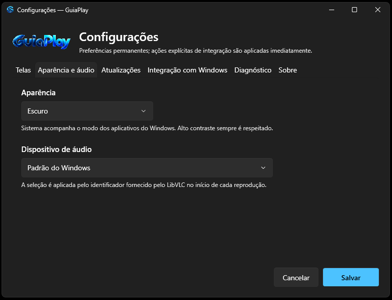
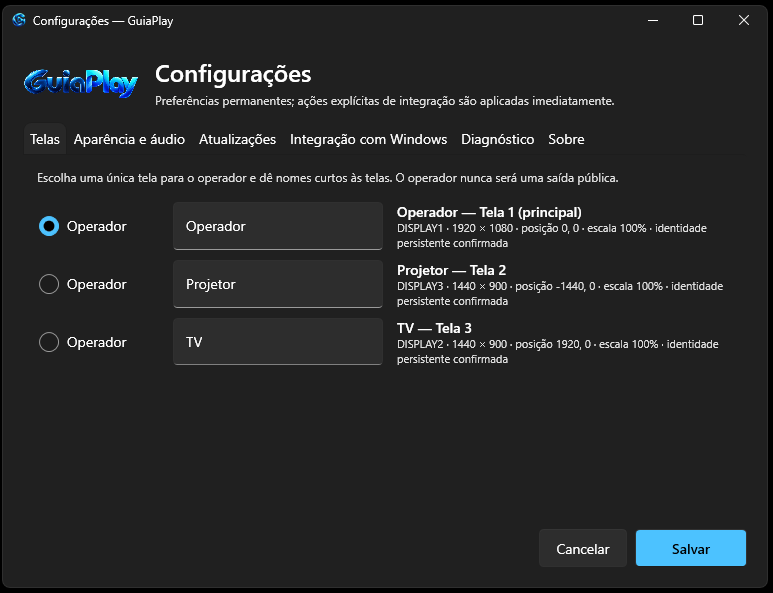
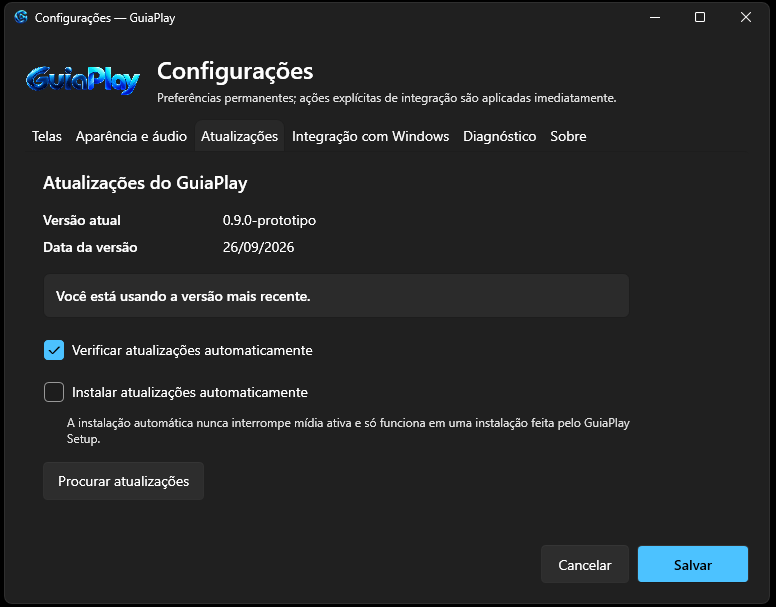
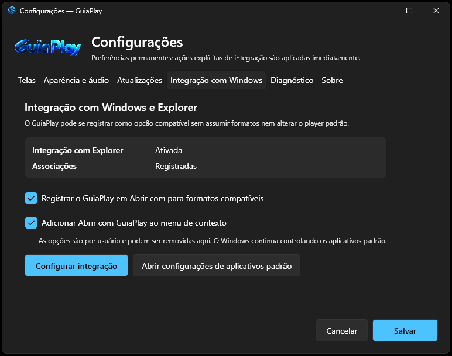
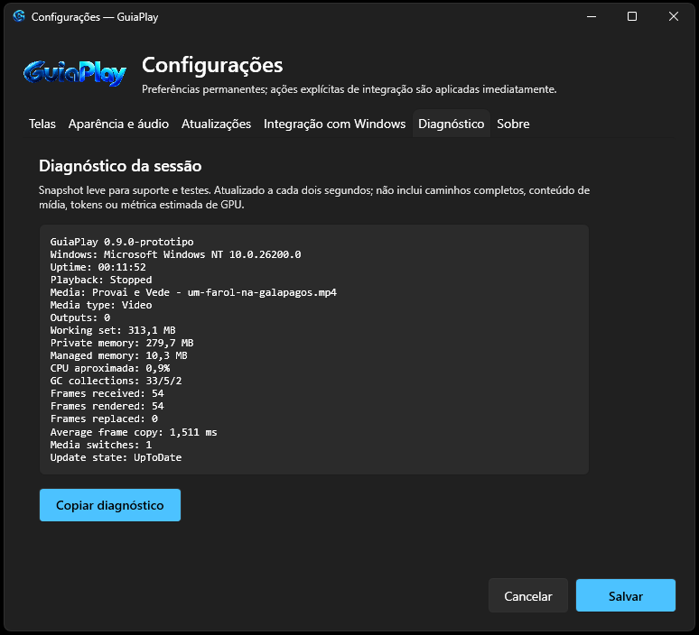
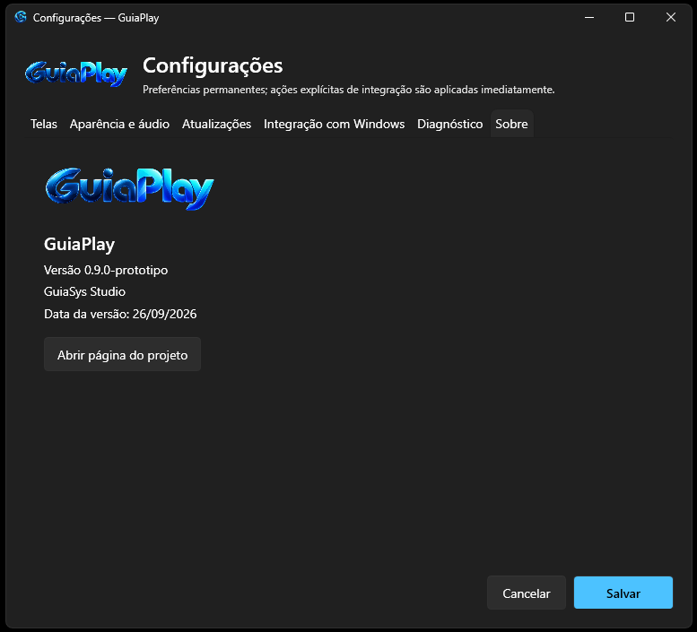

Aparência
Interface adaptada ao ambiente
Escolha a aparência do aplicativo e mantenha a leitura confortável em diferentes condições de iluminação. A área visual receberá novas opções nas próximas versões.

O GuiaPlay reúne reprodução, organização, identificação de monitores e configuração de saídas em uma interface direta para o operador.

Escolha uma tela exclusiva para o operador, nomeie cada monitor e use a identificação visual antes da apresentação.
As capturas abaixo são da versão atual e serão atualizadas conforme as próximas mudanças de interface forem concluídas.

Escolha a aparência do aplicativo e mantenha a leitura confortável em diferentes condições de iluminação. A área visual receberá novas opções nas próximas versões.
Defina o dispositivo de reprodução de áudio independentemente das saídas de vídeo. A seção dedicada de áudio está sendo ampliada com novos controles.

Verifique novas versões automaticamente ou faça uma consulta manual. Quando existe uma versão mais nova, o aplicativo informa o operador.

O GuiaPlay pode aparecer nas opções compatíveis do Windows e no menu de contexto sem assumir formatos automaticamente nem alterar o player padrão por conta própria.

Acompanhe dados da sessão, consumo aproximado de recursos, estado da reprodução, frames e informações de atualização em um resumo fácil de copiar.

Consulte a versão instalada, a data da versão e as informações principais do GuiaPlay e da GuiaSys Studio.
Uma área dedicada ao usuário e às informações de licença está planejada para integrar o GuiaPlay ao sistema de clientes e chaves da GuiaSys. A imagem atual é provisória.

Prévia, playlist, reprodução, volume, operador e seleção das saídas ficam concentrados em uma visão de trabalho única.